Primary Result Table
Values are percentages from the standardized report summaries. Commitment uses finalReachedGoal == firstDetectedSharedGoal; the plots below show 95% CI error bars.
| Model | Scope | Fit / Setting | Success | Efficiency | Commitment | Signaling |
|---|---|---|---|---|---|---|
| sampleJointGoal_afterNewGoal | Average all 2P3G | beta=3.0, lambda=0.125 fixed/current branch value | 92.5 | 90.0 | 69.0 | 31.0 |
| sampleJointGoal_afterNewGoal | Equal-to-both | beta=3.0, lambda=0.125 fixed/current branch value | 98.9 | 98.5 | 85.8 | 42.5 |
| sampleJointGoalAndSignal_afterNewGoal | Average all 2P3G | beta=3.0, lambda=0.125, mixture p=0.375 from trial-level signaling fit | 92.5 | 89.0 | 74.2 | 44.0 |
| sampleJointGoalAndSignal_afterNewGoal | Equal-to-both | beta=3.0, lambda=0.125, mixture p=0.375 from trial-level signaling fit | 100.0 | 98.4 | 73.6 | 64.1 |
| sampleJointGoal_fromStart | Average all 2P3G | beta=3.0, lambda=0.15 from equal-to-both trial-level commitment fit | 93.9 | 89.0 | 78.5 | 36.1 |
| sampleJointGoal_fromStart | Equal-to-both | beta=3.0, lambda=0.15 from equal-to-both trial-level commitment fit | 100.0 | 98.6 | 85.6 | 36.9 |
| sampleJointGoalAndSignal_fromStart | Average all 2P3G | beta=3.0, lambda=0.20, mixture p=0.4375 from adaptive trial-level commitment+signaling fit | 86.1 | 90.2 | 80.9 | 44.3 |
| sampleJointGoalAndSignal_fromStart | Equal-to-both | beta=3.0, lambda=0.20, mixture p=0.4375 from adaptive trial-level commitment+signaling fit | 98.9 | 99.0 | 86.9 | 60.6 |
| sampleJointGoalAndRSASignal_fromStart (shared-agency model) | Average all 2P3G | beta=3.0, lambda=0.325, RSA alpha=7.25 from adaptive trial-level commitment+signaling fit | 94.2 | 89.4 | 82.9 | 41.9 |
| sampleJointGoalAndRSASignal_fromStart (shared-agency model) | Equal-to-both | beta=3.0, lambda=0.325, RSA alpha=7.25 from adaptive trial-level commitment+signaling fit | 100.0 | 99.4 | 96.3 | 61.1 |
| samplePosteriorOnlyGoalAndSignal_fromStart | Average all 2P3G | beta=3.0, lambda=0.325, mixture p=0.5625 from adaptive trial-level commitment+signaling fit with no EU term | 82.8 | 88.2 | 81.7 | 46.7 |
| samplePosteriorOnlyGoalAndSignal_fromStart | Equal-to-both | beta=3.0, lambda=0.325, mixture p=0.5625 from adaptive trial-level commitment+signaling fit with no EU term | 100.0 | 96.8 | 95.2 | 68.8 |
| TwoStageSignalAgent_sigmoidThreshold | Average all 2P3G | beta=3.0, k=10, tau=2/3 fixed, eta=0 fixed, lambda=0.10 and mixture p=0.00 from success-weighted lambda-p search | 95.3 | 88.5 | 75.5 | 38.2 |
| TwoStageSignalAgent_sigmoidThreshold | Equal-to-both | beta=3.0, k=10, tau=2/3 fixed, eta=0 fixed, lambda=0.10 and mixture p=0.00 from success-weighted lambda-p search | 100.0 | 97.7 | 81.7 | 48.1 |
| Human-Human | Average all 2P3G | reference data, not a model | 100.0 | 81.6 | 66.2 | 51.7 |
| Human-Human | Equal-to-both | reference data, not a model | 100.0 | 96.6 | 85.1 | 58.5 |
Fit Sweeps / Heatmaps
Each plot highlights the parameter setting used in the primary result table. Line sweeps mark the best fit with a red dashed line and star; lambda × mixture-p heatmaps use a starred best setting.
sampleJointGoal_afterNewGoal
Lambda sweep; red dashed line and star mark best fit lambda = 0.125.
{kind=link}
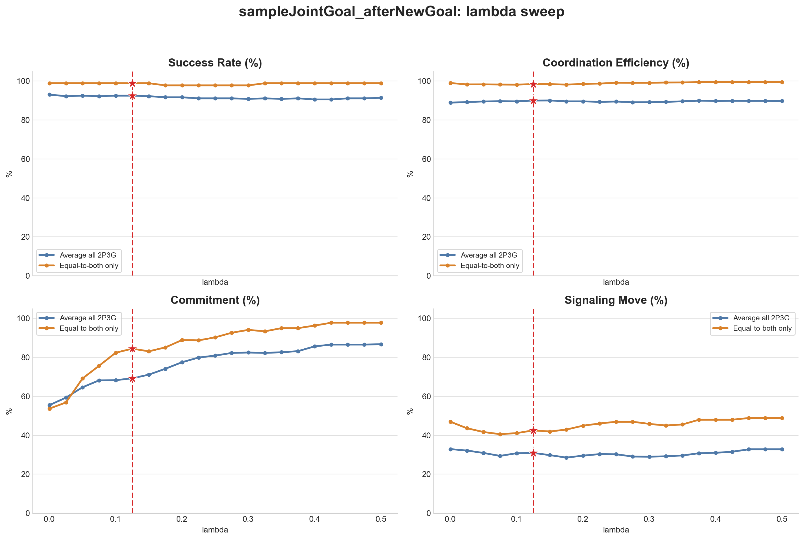
sampleJointGoalAndSignal_afterNewGoal
Mixture-p sweep; red dashed line and star mark best fit p = 0.375.
{kind=link}
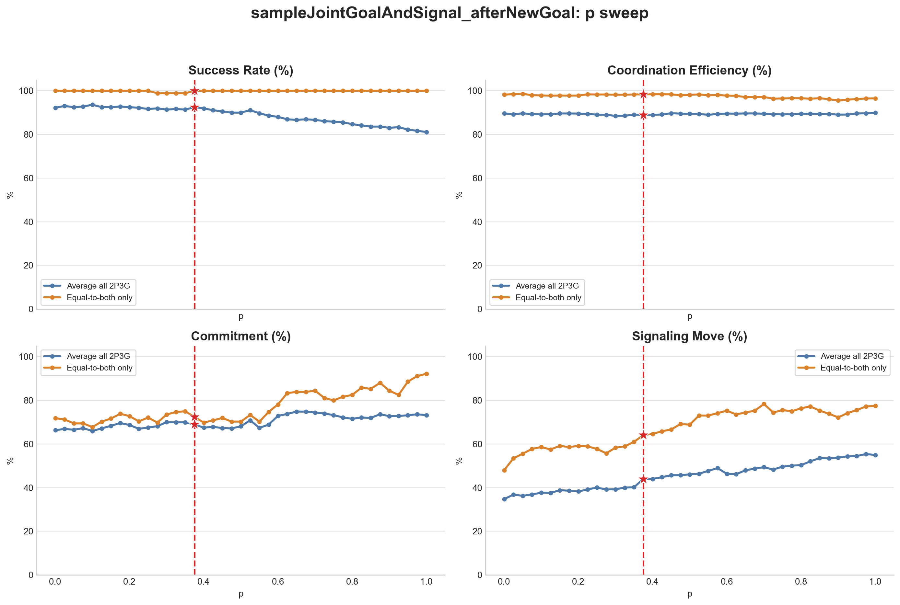
sampleJointGoal_fromStart
Lambda sweep; red dashed line and star mark best fit lambda = 0.15.
{kind=link}
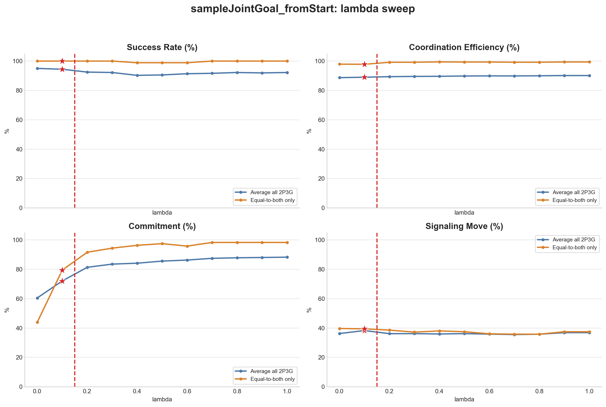
sampleJointGoalAndSignal_fromStart
Adaptive lambda × mixture-p heatmaps for all four measures; red star marks the trial-level commitment+signaling NLL best fit: lambda = 0.20, p = 0.4375.
{kind=link}
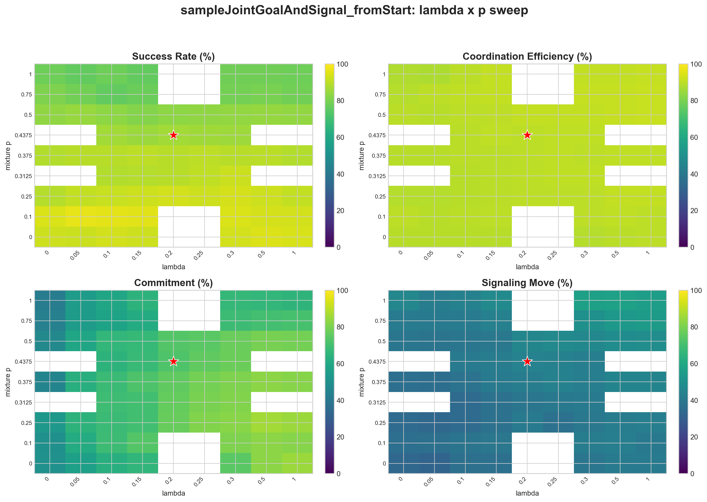
{kind=link}
{kind=link}
sampleJointGoalAndRSASignal_fromStart (shared-agency model)
Adaptive lambda × RSA-alpha heatmaps for all four measures; red star marks the trial-level commitment+signaling NLL best fit: lambda = 0.325, alpha = 7.25.
{kind=link}
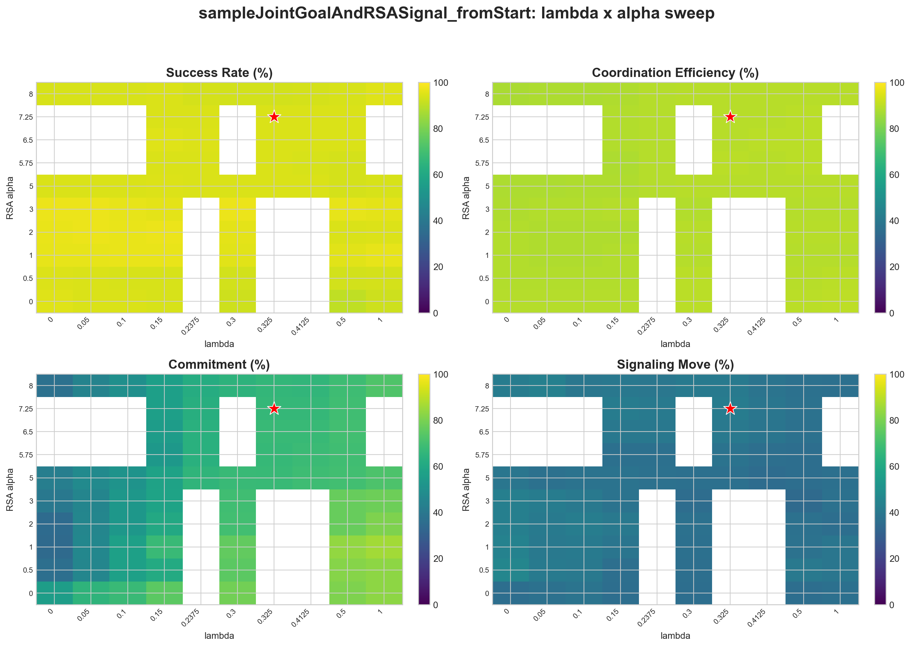
{kind=link}
{kind=link}
samplePosteriorOnlyGoalAndSignal_fromStart
Adaptive lambda × mixture-p heatmaps for all four measures; red star marks the trial-level commitment+signaling NLL best fit: lambda = 0.325, p = 0.5625.
{kind=link}
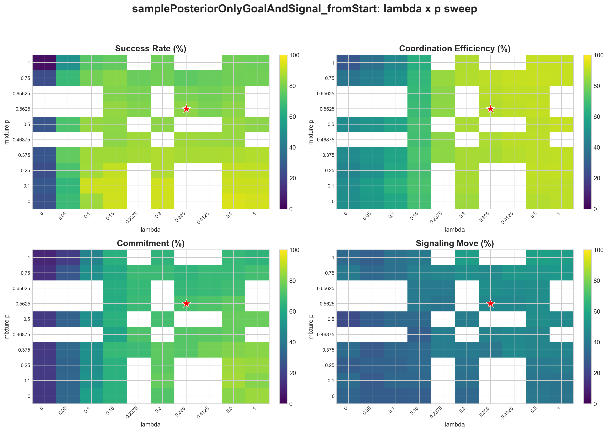
{kind=link}
{kind=link}
TwoStageSignalAgent_sigmoidThreshold
Success-weighted lambda × mixture-p heatmaps for all four measures; red star marks the best commitment+signaling+success NLL fit: lambda = 0.10, p = 0.00.
{kind=link}
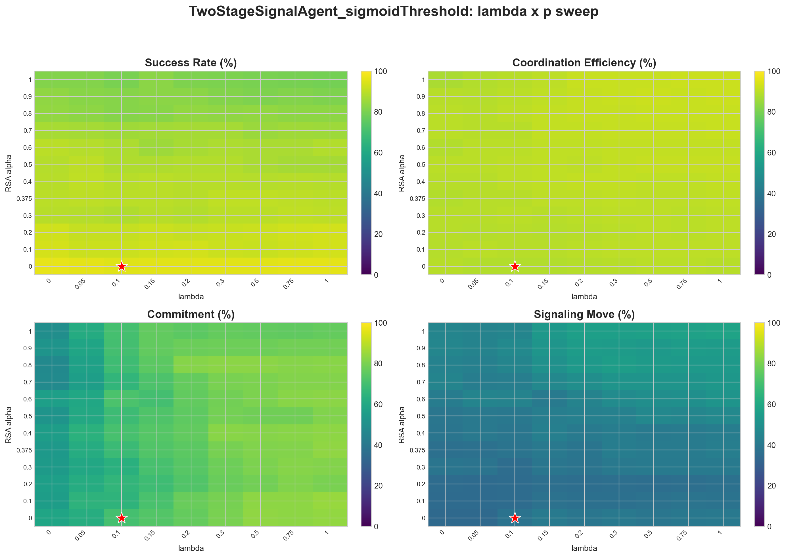
all measures, average all measures, equal-to-both grid CSV
{kind=link}
{kind=link}
Lambda × tau heatmaps for all four measures from the tau sweep; this keeps the signaling variant fixed at alpha=1 and eta=1.

lambda × tau, average lambda × tau, equal-to-both lambda × tau grid CSV
{kind=link}
Compact Visual Summary
Grouped bars match the standardized report style: solid bars are average all 2P3G distance conditions; lighter bars are equal-to-both only. Error bars show 95% CI, and Human-Human is the gray reference bar.
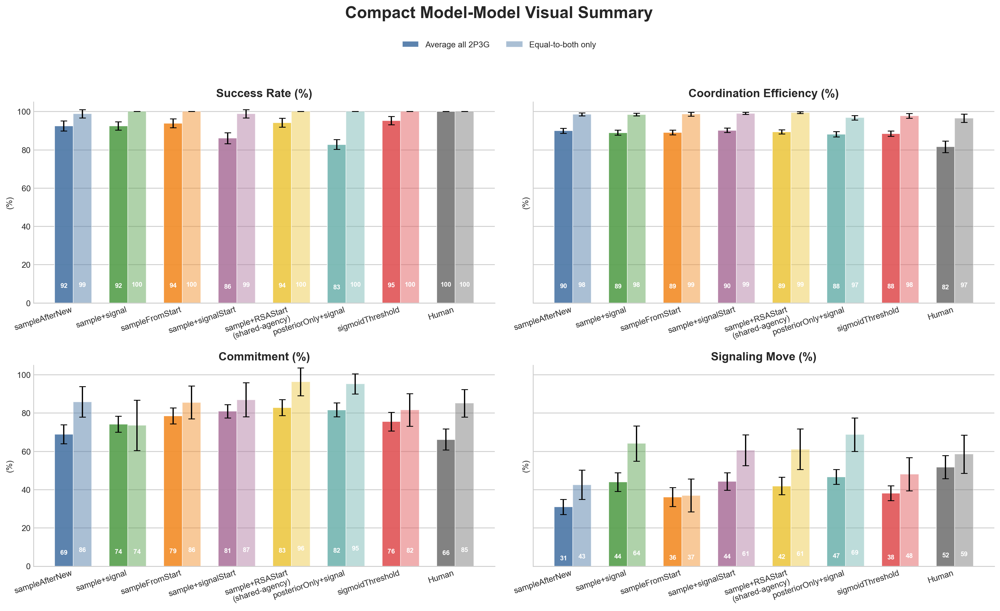
BToM Legibility After New-Goal Presentation
BToM legibility is computed from each post-new-goal sub-trajectory using the listener posterior from BToM_legibility_comparison.ipynb: posterior over the original shared goal versus the new goal, scored as \(P(\mathrm{final\ reached\ goal})\). Step 0 is the new-goal presentation moment.
Posterior Over First 5 Steps
{kind=link}
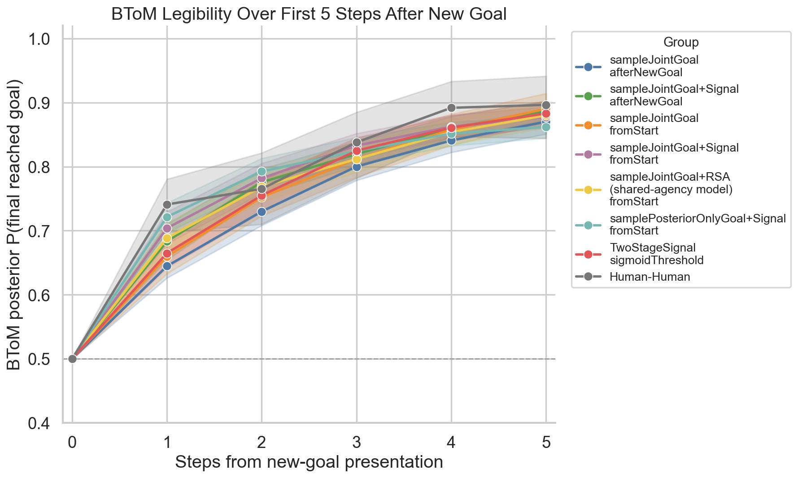
Mean Posterior Across First 5 Steps
{kind=link}
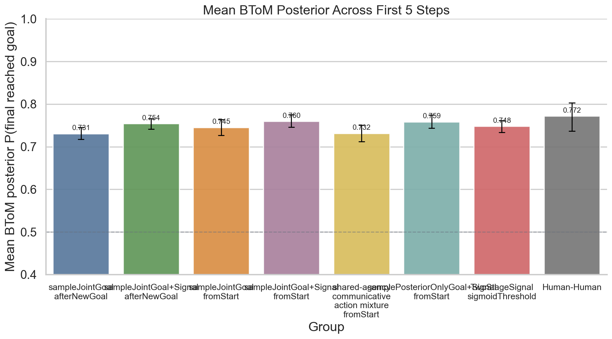
summary CSV step-level participant CSV mean posterior participant CSV
sampleJointGoal_afterNewGoal
Joint-RL before new-goal; after new-goal, infer posterior and resample a joint goal every step.
Math
Result Snapshot
| Scope | Success | Efficiency | Commitment | Signaling |
|---|---|---|---|---|
| Average | 92.5 | 90.0 | 69.0 | 31.0 |
| Equal-to-both | 98.9 | 98.5 | 85.8 | 42.5 |
Fit Sweep / Heatmap
Lambda sweep; red dashed line and star mark best fit lambda = 0.125.
Result Plot
Implementation alias: CommittedAgent. Primary row uses the every-step resampling model at lambda=0.125, not one-shot or threshold variants. The result plot is standardized against Human-Human with 95% CI error bars.
model.md notebook result plot fit plot summary CSV
{kind=link}
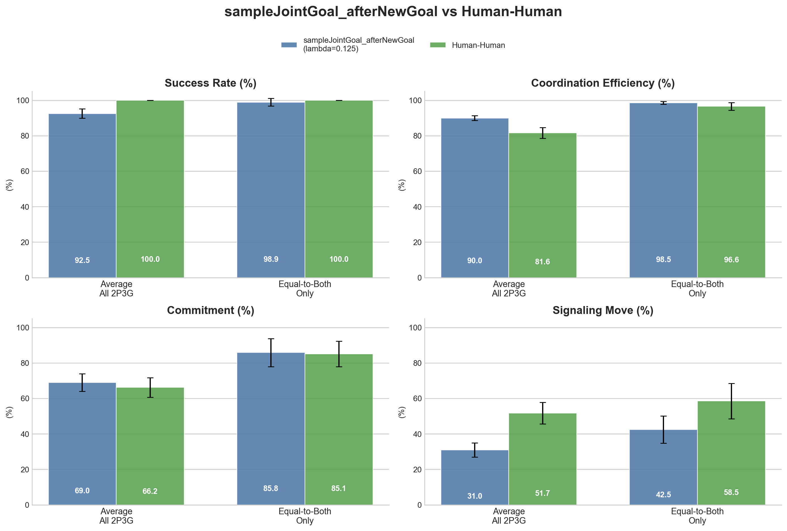
sampleJointGoalAndSignal_afterNewGoal
Post-new-goal sampled joint-goal target plus a legibility layer that favors actions making the sampled goal easier for a listener to infer.
Math
Result Snapshot
| Scope | Success | Efficiency | Commitment | Signaling |
|---|---|---|---|---|
| Average | 92.5 | 89.0 | 74.2 | 44.0 |
| Equal-to-both | 100.0 | 98.4 | 73.6 | 64.1 |
Fit Sweep / Heatmap
Mixture-p sweep; red dashed line and star mark best fit p = 0.375.
Result Plot
Implementation alias: SignalAgent. This page uses the Bernoulli mixture variant fit to trial/player-level signaling by distance condition; model.md also documents margin, log-posterior, and trajectory variants. The result plot is standardized against Human-Human with 95% CI error bars.
model.md notebook result plot fit plot summary CSV
{kind=link}
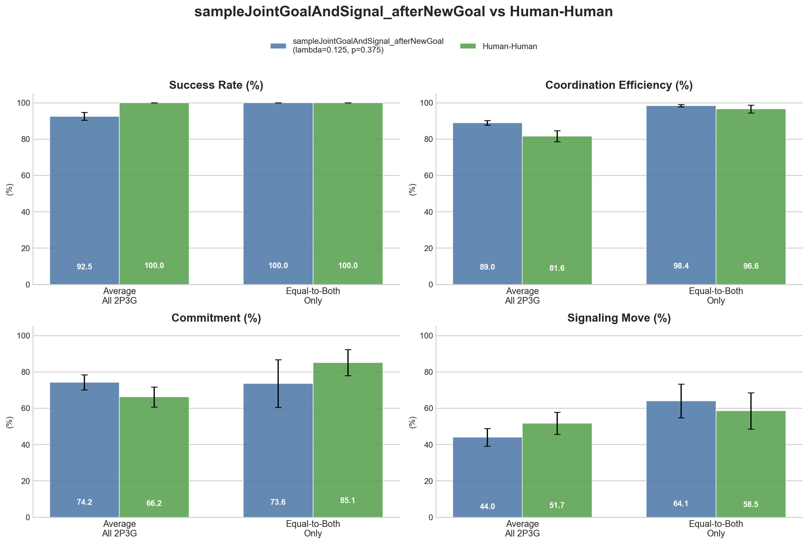
sampleJointGoal_fromStart
Commitment model is active from trial start; posterior is uniform over initial goals and resized when the new goal appears.
Math
Result Snapshot
| Scope | Success | Efficiency | Commitment | Signaling |
|---|---|---|---|---|
| Average | 93.9 | 89.0 | 78.5 | 36.1 |
| Equal-to-both | 100.0 | 98.6 | 85.6 | 36.9 |
Fit Sweep / Heatmap
Lambda sweep; red dashed line and star mark best fit lambda = 0.15.
Result Plot
Implementation alias: AlwaysCommittedAgent. A separate step-level action fit produced lambda=32.89 and much higher commitment; this page uses the trial-level commitment fit because it is closer to the behavioral target. The result plot is standardized against Human-Human with 95% CI error bars.
model.md notebook result plot fit plot summary CSV
{kind=link}
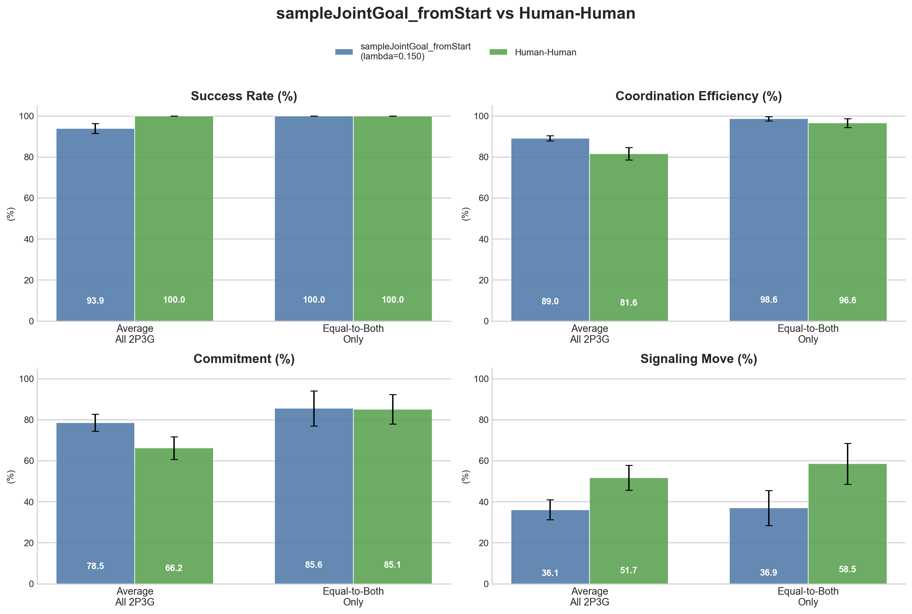
sampleJointGoalAndSignal_fromStart
Always-on posterior timing plus a legibility layer that favors actions making the sampled goal easier for a listener to infer.
Math
Result Snapshot
| Scope | Success | Efficiency | Commitment | Signaling |
|---|---|---|---|---|
| Average | 86.1 | 90.2 | 80.9 | 44.3 |
| Equal-to-both | 98.9 | 99.0 | 86.9 | 60.6 |
Fit Sweep / Heatmap
Adaptive lambda × mixture-p heatmap; red star marks best fit lambda = 0.20, p = 0.4375.
Result Plot
Implementation alias: AlwaysSignalAgent. Primary row uses the trial-level adaptive lambda × p fit that optimizes commitment plus signaling binomial NLL; success and efficiency are reported but not optimized. The result plot is standardized against Human-Human with 95% CI error bars.
model.md notebook result plot lambda × p heatmap summary CSV grid CSV
{kind=link}
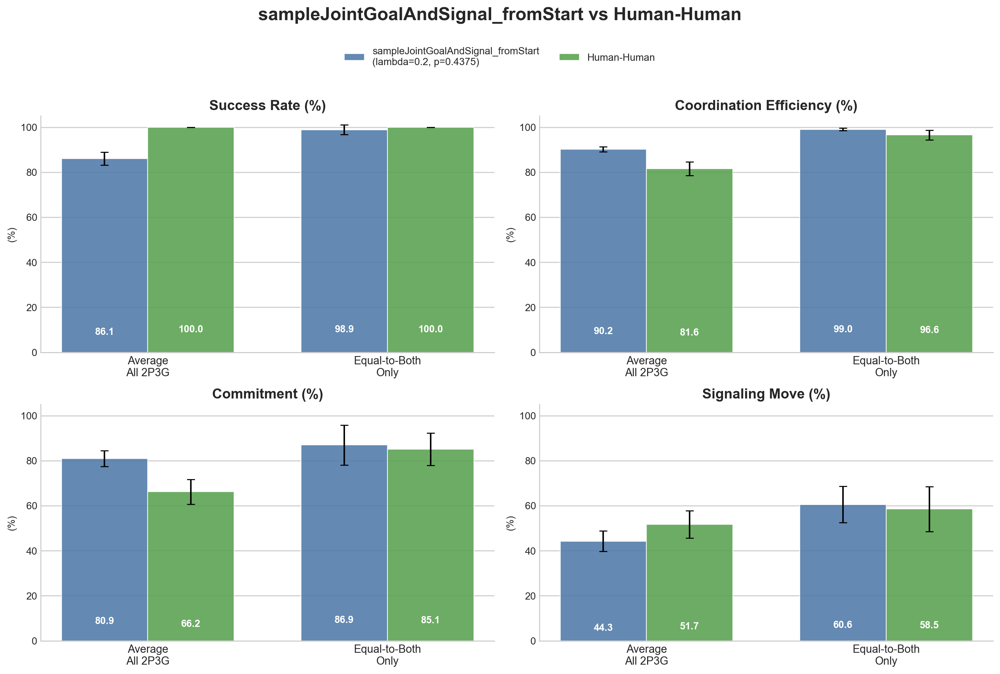
sampleJointGoalAndRSASignal_fromStart (shared-agency model)
Always-on posterior timing and joint-goal sampling, with RSA/log-posterior signaling instead of the Bernoulli mixture signal policy.
Math
Result Snapshot
| Scope | Success | Efficiency | Commitment | Signaling |
|---|---|---|---|---|
| Average | 94.2 | 89.4 | 82.9 | 41.9 |
| Equal-to-both | 100.0 | 99.4 | 96.3 | 61.1 |
Fit Sweep / Heatmap
Adaptive lambda × RSA-alpha heatmap; red star marks best fit lambda = 0.325, alpha = 7.25.
Result Plot
Implementation alias: AlwaysSignalAgent with score=logposterior and horizon=1. Primary row uses the trial-level adaptive lambda × alpha fit that optimizes commitment plus signaling binomial NLL; success and efficiency are reported but not optimized. The result plot is standardized against Human-Human with 95% CI error bars.
model.md notebook result plot lambda × alpha heatmap summary CSV grid CSV
{kind=link}
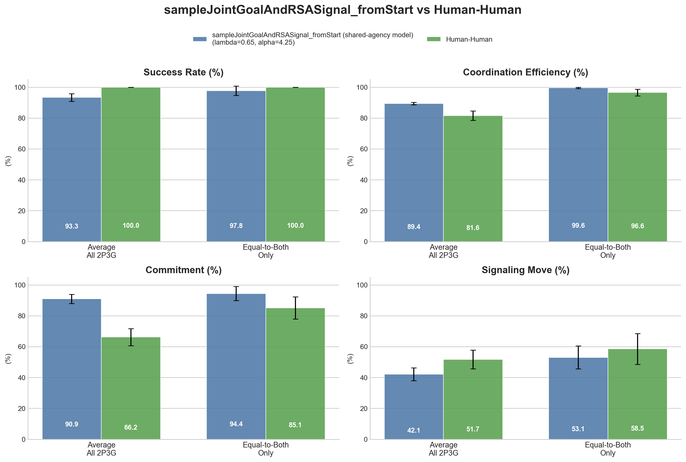
samplePosteriorOnlyGoalAndSignal_fromStart
Always-on posterior timing plus signaling, with goal selection based only on inferred joint-goal posterior rather than joint-distance utility.
Math
Result Snapshot
| Scope | Success | Efficiency | Commitment | Signaling |
|---|---|---|---|---|
| Average | 82.8 | 88.2 | 81.7 | 46.7 |
| Equal-to-both | 100.0 | 96.8 | 95.2 | 68.8 |
Fit Sweep / Heatmap
Adaptive lambda × mixture-p heatmap; red star marks best fit lambda = 0.325, p = 0.5625.
Result Plot
Implementation alias: PosteriorOnlySignalAgent. Primary row uses the trial-level adaptive lambda × p fit that optimizes commitment plus signaling binomial NLL; success and efficiency are reported but not optimized. The result plot is standardized against Human-Human with 95% CI error bars.
model.md notebook result plot lambda × p heatmap summary CSV grid CSV
{kind=link}
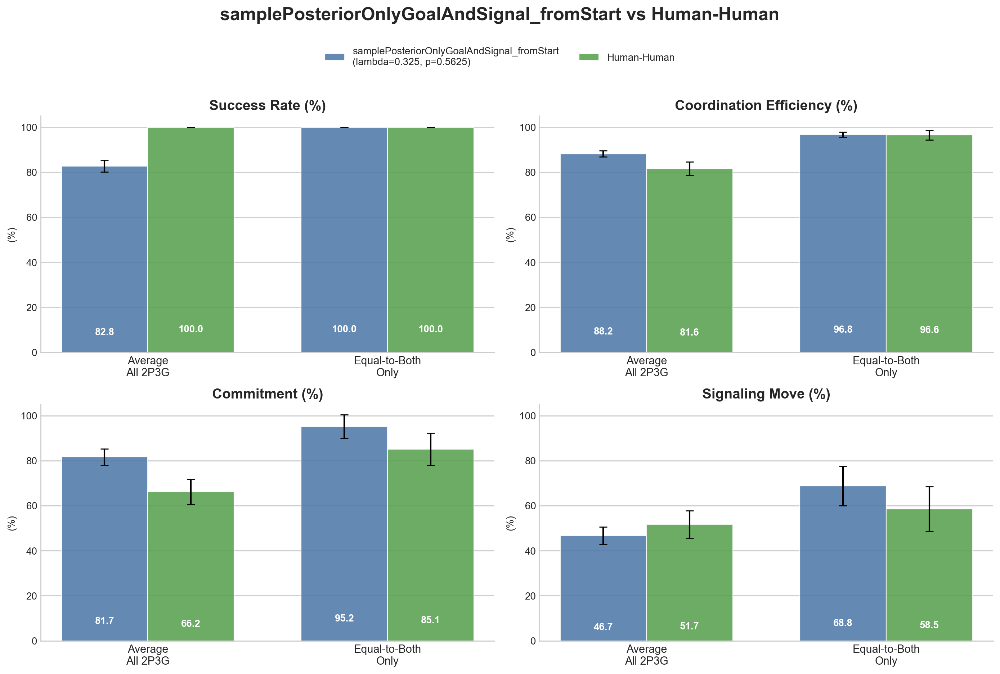
TwoStageSignalAgent_sigmoidThreshold
Starts flexible under joint-RL, monitors joint-goal posterior, then smoothly gates into posterior-weighted committed signaling.
Math
Result Snapshot
| Scope | Success | Efficiency | Commitment | Signaling |
|---|---|---|---|---|
| Average | 95.3 | 88.5 | 75.5 | 38.2 |
| Equal-to-both | 100.0 | 97.7 | 81.7 | 48.1 |
Fit Sweep / Heatmap
Success-weighted lambda × mixture-p heatmaps for all four measures; red star marks best fit lambda = 0.10, p = 0.00.
Lambda × tau heatmaps for all four measures from the tau sweep, with alpha=1 and eta=1 fixed.
Result Plot
Implementation alias: TwoStageSignalAgent. This page uses the success-weighted mixture-signaling variant with tau fixed at 2/3 and eta fixed at 0; older commitment/signaling-only and logposterior fits remain in the output folder for comparison. The result plot is standardized against Human-Human with 95% CI error bars.
model.md notebook result plot lambda × p heatmap lambda × tau heatmap summary CSV lambda × p grid CSV lambda × tau grid CSV
{kind=link}
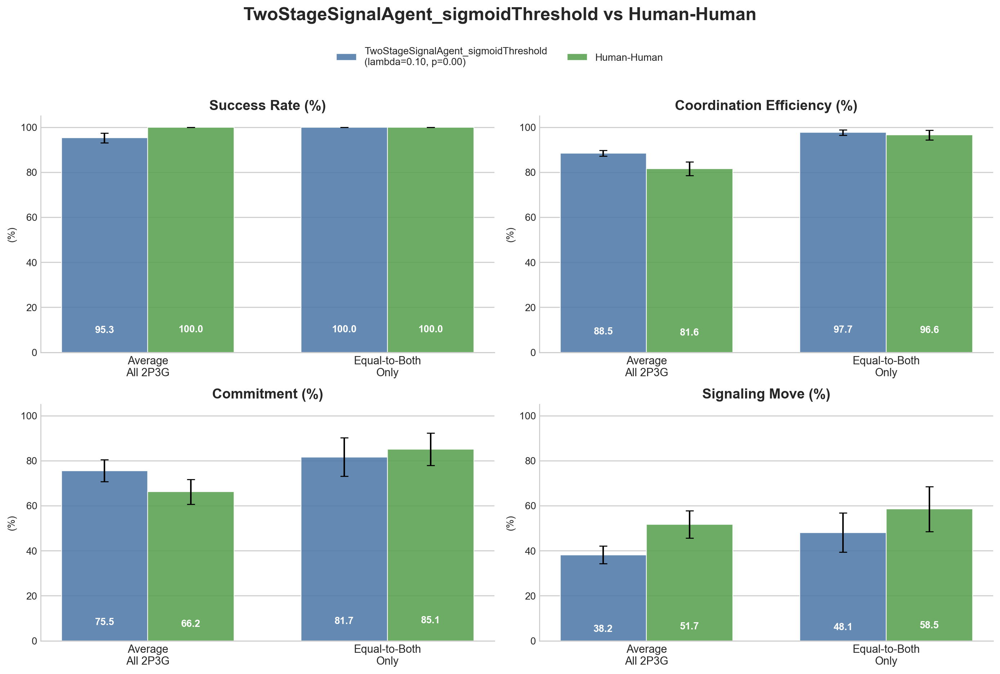